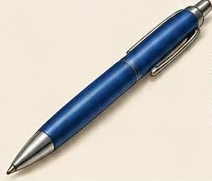
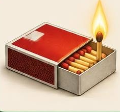

Rubik-kocka
Rubik Ernő

Golyóstoll
Bíró László József

Zajtalan gyufa
Irinyi János

Holográfia
Gábor Dénes

Dinamó
Jedlik Ányos

Porlasztó
Bánki Donát és Csonka János

Transzformátor
Bláthy, Déri és Zipernowsky

A C-vitamin felfedezése
Szent-Györgyi Albert